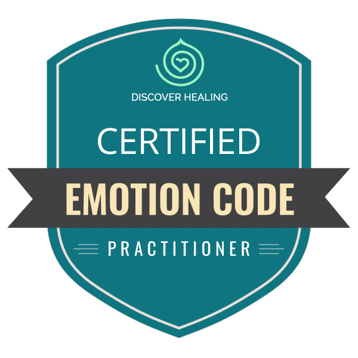
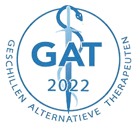
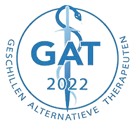
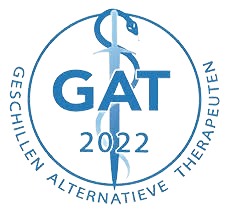
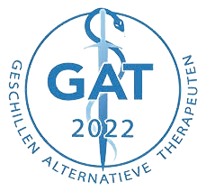

 



Metoda doktora Nelsona je jedna jaka energetska metoda koja ne boli ali koja nam pomaze da se ocistimo od blokada koje su negde u nama sakrivene i koje nas koce u nasem napretku bilo koje vrste. Radi se o blokadama traumatske vrste koje su nastale u jednom momentu kada se telo zgrcilo od nekog dogadjaja. Pored toga ovi grcevi ili blokade mogu izazvati bolove razne vrste, tegobe ili smetnje i na kraju dovesti do neke hronicne bolesti. Oni mogu uticati na vase emocionalno stanje, vas uspeh , na to kako razmisljate ili odluke koje donosite. Strahovi ili stresne emocije kao ljunja , bes, ljubomora i slicno, opterecuju nase telo i mi iako smo ih svesni, nismo u stanju da uticemo na njih i da ih otklonimo. U toku tretmana ovom metodom koristimo test prstima iz kineziologije. Time nalazimo i odredjujemo koje zakljucane i sakrivene emocije mogu biti uzrok nekog disbalansa u nasem telu. Kada ih pronadjemo , otklanjamo ih iz naseg energetskog tela uz pomoc magneta i tako podsticemo telo da se samo regenerise.
Theta healing je energetska metoda isceljivanja koju je osmislila Vianna Stibal. To je meditativni proces koji isceljuje na svim nivoima naseg postojanja. Fizickom nivou, emocionalnom nivou, mentalnom i spiritualnom nivou. Ona ti omogucava da iz svog svesnog stanja odes u podsvesno i da to podsvesno osvestis. Uz pomoc teta mozdanih talasa vodjenih intuicijom mi smo u stanju da nase podsvesna ubedjenja, misaone programe kao i nacin na koji dozivljavamo sebe i svet, promenimo i time prosirimo nasu svest. Mi polazimo od toga da svaki problem nosi u sebi i resenje.
Reiki je holistički pristup liječenju i djeluje na svim razinama: tjelesnoj, mentalnoj, emotivnoj i duhovnoj. Jedan Reiki tretman se sastoji od polaganja ruku na deo tela koji se problematican. To se moze obaviti ili direktnim polaganjem ruku na telo ili polaganjem ruku u razmaku od nekoliko centimetara iznad tela sto znaci bez direktnog dodirivanja. Blokirane energije se opet pokrecu , stare traume se isceljuju.
Ruke se polazu na bolesni deo ali energija ipak sama trazi put gde je najpotrebnija. Reiki nam jaca zdravlje i energiju i time pokrece samoizlecenje tela.